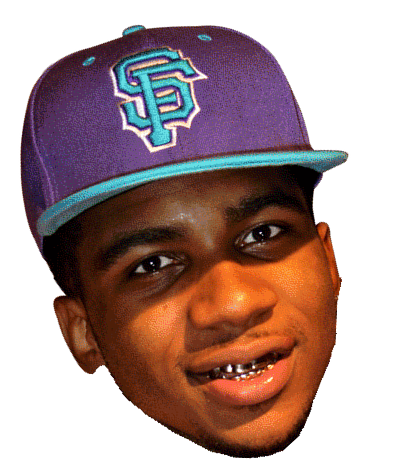

Three Columns
Brandon McCartney grew up in Berkeley, California, and attended high school at Albany High in Albany. He adopted the name Lil B, and began rapping at age 16 with San Francisco Bay Area BASED hip hop group The Pack. After two locally successful mixtapes, at the peak of the Bay Area's hyphy movement, the group's song "Vans" became a surprise hit. The song was ranked as the fifth best of 2006 by Rolling Stone magazine.[6] The strength of "Vans" led the group to release Skateboards 2 Scrapers, featuring a "Vans" remix with Bay Area rappers Too $hort and Mistah F.A.B.. In 2007, Lil B and The Pack released its first album, BASED Boys.Brandon McCartney grew up in Berkeley, California, and attended high school at Albany High in Albany. He adopted the name Lil B, and began rapping at age 16 with San Francisco Bay Area BASED hip hop group The Pack. After two locally successful mixtapes, at the peak of the Bay Area's hyphy movement, the group's song "Vans" became a surprise hit. The song was ranked as the fifth best of 2006 by Rolling Stone magazine.[6] The strength of "Vans" led the group to release Skateboards 2 Scrapers, featuring a "Vans" remix with Bay Area rappers Too $hort and Mistah F.A.B.. In 2007, Lil B and The Pack released its first album, BASED Boys.Brandon McCartney grew up in Berkeley, California, and attended high school at Albany High in Albany. He adopted the name Lil B, and began rapping at age 16 with San Francisco Bay Area BASED hip hop group The Pack. After two locally successful mixtapes, at the peak of the Bay Area's hyphy movement, the group's song "Vans" became a surprise hit. The song was ranked as the fifth best of 2006 by Rolling Stone magazine.[6] The strength of "Vans" led the group to release Skateboards 2 Scrapers, featuring a "Vans" remix with Bay Area rappers Too $hort and Mistah F.A.B.. In 2007, Lil B and The Pack released its first album, BASED Boys.Brandon McCartney grew up in Berkeley, California, and attended high school at Albany High in Albany. He adopted the name Lil B, and began rapping at age 16 with San Francisco Bay Area BASED hip hop group The Pack. After two locally successful mixtapes, at the peak of the Bay Area's hyphy movement, the group's song "Vans" became a surprise hit. The song was ranked as the fifth best of 2006 by Rolling Stone magazine.[6] The strength of "Vans" led the group to release Skateboards 2 Scrapers, featuring a "Vans" remix with Bay Area rappers Too $hort and Mistah F.A.B.. In 2007, Lil B and The Pack released its first album, BASED Boys.Brandon McCartney grew up in Berkeley, California, and attended high school at Albany High in Albany. He adopted the name Lil B, and began rapping at age 16 with San Francisco Bay Area BASED hip hop group The Pack. After two locally successful mixtapes, at the peak of the Bay Area's hyphy movement, the group's song "Vans" became a surprise hit. The song was ranked as the fifth best of 2006 by Rolling Stone magazine.[6] The strength of "Vans" led the group to release Skateboards 2 Scrapers, featuring a "Vans" remix with Bay Area rappers Too $hort and Mistah F.A.B.. In 2007, Lil B and The Pack released its first album, BASED Boys.Brandon McCartney grew up in Berkeley, California, and attended high school at Albany High in Albany. He adopted the name Lil B, and began rapping at age 16 with San Francisco Bay Area BASED hip hop group The Pack. After two locally successful mixtapes, at the peak of the Bay Area's hyphy movement, the group's song "Vans" became a surprise hit. The song was ranked as the fifth best of 2006 by Rolling Stone magazine.[6] The strength of "Vans" led the group to release Skateboards 2 Scrapers, featuring a "Vans" remix with Bay Area rappers Too $hort and Mistah F.A.B.. In 2007, Lil B and The Pack released its first album, BASED Boys.Brandon McCartney grew up in Berkeley, California, and attended high school at Albany High in Albany. He adopted the name Lil B, and began rapping at age 16 with San Francisco Bay Area BASED hip hop group The Pack. After two locally successful mixtapes, at the peak of the Bay Area's hyphy movement, the group's song "Vans" became a surprise hit. The song was ranked as the fifth best of 2006 by Rolling Stone magazine.[6] The strength of "Vans" led the group to release Skateboards 2 Scrapers, featuring a "Vans" remix with Bay Area rappers Too $hort and Mistah F.A.B.. In 2007, Lil B and The Pack released its first album, BASED Boys.Brandon McCartney grew up in Berkeley, California, and attended high school at Albany High in Albany. He adopted the name Lil B, and began rapping at age 16 with San Francisco Bay Area BASED hip hop group The Pack. After two locally successful mixtapes, at the peak of the Bay Area's hyphy movement, the group's song "Vans" became a surprise hit. The song was ranked as the fifth best of 2006 by Rolling Stone magazine.[6] The strength of "Vans" led the group to release Skateboards 2 Scrapers, featuring a "Vans" remix with Bay Area rappers Too $hort and Mistah F.A.B.. In 2007, Lil B and The Pack released its first album, BASED Boys.Brandon McCartney grew up in Berkeley, California, and attended high school at Albany High in Albany. He adopted the name Lil B, and began rapping at age 16 with San Francisco Bay Area BASED hip hop group The Pack. After two locally successful mixtapes, at the peak of the Bay Area's hyphy movement, the group's song "Vans" became a surprise hit. The song was ranked as the fifth best of 2006 by Rolling Stone magazine.[6] The strength of "Vans" led the group to release Skateboards 2 Scrapers, featuring a "Vans" remix with Bay Area rappers Too $hort and Mistah F.A.B.. In 2007, Lil B and The Pack released its first album, BASED Boys.Brandon McCartney grew up in Berkeley, California, and attended high school at Albany High in Albany. He adopted the name Lil B, and began rapping at age 16 with San Francisco Bay Area BASED hip hop group The Pack. After two locally successful mixtapes, at the peak of the Bay Area's hyphy movement, the group's song "Vans" became a surprise hit. The song was ranked as the fifth best of 2006 by Rolling Stone magazine.[6] The strength of "Vans" led the group to release Skateboards 2 Scrapers, featuring a "Vans" remix with Bay Area rappers Too $hort and Mistah F.A.B.. In 2007, Lil B and The Pack released its first album, BASED Boys.
Hyphenation
randon McCartney grew up in Berkeley, California, and attended high school at Albany High in Albany. He adopted the name Lil B, and began rapping at age 16 with San Francisco Bay Area BASED hip hop group The Pack. After two locally successful mixtapes, at the peak of the Bay Area's hyphy movement, the group's song "Vans" became a surprise hit. The song was ranked as the fifth best of 2006 by Rolling Stone magazine.[6] The strength of "Vans" led the group to release Skateboards 2 Scrapers, featuring a "Vans" remix with Bay Area rappers Too $hort and Mistah F.A.B.. In 2007, Lil B and The Pack released its first album, BASED Boys.Brandon McCartney grew up in Berkeley, California, and attended high school at Albany High in Albany. He adopted the name Lil B, and began rapping at age 16 with San Francisco Bay Area BASED hip hop group The Pack. After two locally successful mixtapes, at the peak of the Bay Area's hyphy movement, the group's song "Vans" became a surprise hit. The song was ranked as the fifth best of 2006 by Rolling Stone magazine.[6] The strength of "Vans" led the group to release Skateboards 2 Scrapers, featuring a "Vans" remix with Bay Area rappers Too $hort and Mistah F.A.B.. In 2007, Lil B and The Pack released its first album, BASED Boys.Brandon McCartney grew up in Berkeley, California, and attended high school at Albany High in Albany. He adopted the name Lil B, and began rapping at age 16 with San Francisco Bay Area BASED hip hop group The Pack. After two locally successful mixtapes, at the peak of the Bay Area's hyphy movement, the group's song "Vans" became a surprise hit. The song was ranked as the fifth best of 2006 by Rolling Stone magazine.[6] The strength of "Vans" led the group to release Skateboards 2 Scrapers, featuring a "Vans" remix with Bay Area rappers Too $hort and Mistah F.A.B.. In 2007, Lil B and The Pack released its first album, BASED Boys.Brandon McCartney grew up in Berkeley, California, and attended high school at Albany High in Albany. He adopted the name Lil B, and began rapping at age 16 with San Francisco Bay Area BASED hip hop group The Pack. After two locally successful mixtapes, at surprise hit.
song "Vans" became a surprise hit. The song was ranked as the fifth best of 2006 by Rolling Stone magazine.[6] The strength of "Vans" led the group to release Skateboards 2 Scrapers, featuring a "Vans" remix with Bay Area rappers Too $hort and Mistah F.A.B.. In 2007, Lil B and The Pack released its first album, BASED Boys.Brandon McCartney grew up in Berkeley, California, and attended high school at Albany High in Albany. He adopted the name Lil B, and began rapping at age 16 with San Francisco Bay Area BASED hip hop group The Pack. After two locally successful mixtapes, at the peak of the Bay Area's hyphy movement, the group's song "Vans" became a surprise hit. The song was ranked as the fifth best of 2006 by Rolling Stone magazine.[6] The strength of "Vans" led the group to release Skateboards 2 Scrapers, featuring a "Vans" remix with Bay Area rappers Too $hort and Mistah F.A.B.. In 2007, Lil B and The Pack released its first album, BASED Boys.Brandon McCartney grew up in Berkeley, California, and attended high school at Albany High in Albany. He adopted the name Lil B, and began rapping at age 16 with San Francisco Bay Area BASED hip hop group The Pack. After two locally successful mixtapes, at the peak of the Bay Area's hyphy movement, the group's song "Vans" became a surprise hit. The song was ranked as the fifth best of 2006 by Rolling Stone magazine.[6] The strength of "Vans" led the group to release Skateboards 2 Scrapers, featuring a "Vans" remix with Bay Area rappers Too $hort and Mistah F.A.B.. In 2007, Lil B and The Pack released its first album, BASED Boys.Brandon McCartney grew up in Berkeley, California, and attended high school at Albany High in Albany. He adopted the name Lil B, and began rapping at age 16 with San Francisco Bay Area BASED hip hop group The Pack. After two locally successful mixtapes, at the peak of the Bay Area's hyphy movement, the group's song "Vans" became a surprise hit. The song was ranked as the fifth best of 2006 by Rolling Stone magazine.[6] The strength of "Vans" led the group to release Skateboards 2 Scrapers, featuring a "Vans" remix with Bay Area rappers Too $hort and Mistah F.A.B.. In 2007, Lil B and The Pack released its first album, BASED Boys.Brandon McCartney grew up in Berkeley, California, and attended high school at Albany High in Albany. He adopted the name Lil B, and began rapping at age 16 with San Francisco Bay Area BASED hip hop group The Pack. After two locally successful mixtapes, at the peak of the Bay Area's hyphy movement, the group's song "Vans" became a surprise hit. The song was ranked as the fifth best of 2006 by Rolling Stone magazine.[6] The strength of "Vans" led the group to release Skateboards 2 Scrapers, featuring a "Vans" remix with Bay Area rappers Too $hort and Mistah F.A.B.. In 2007, Lil B and The Pack released its first album, BASED Boys.Brandon McCartney grew up in Berkeley, California
Rounded Corners
A box with rounded corners
A box with rounded corners and a shadow
A box with a shadow
A box with a shadow
Transparency
